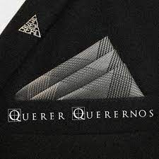
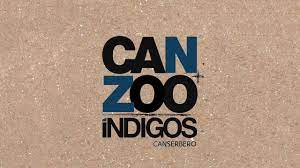
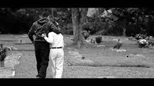
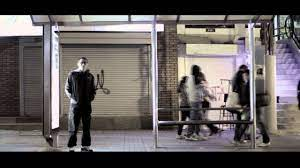

La casa de la musica
Cancerbero
Tirone José González Orama (Caracas, 11 de marzo de 1988-Maracay, 20 de enero de 2015), mejor conocido por su nombre artístico Canserbero,fue un rapero, compositor y activista venezolano.Es considerado como uno de los exponentes más significativos del rap independiente en su país de origen11 y en el resto de América Latina.12 A lo largo de su carrera, lanzó dos álbumes de estudio en solitario: Vida (2010) y Muerte (2012), respectivamente, con varias canciones destacadas, como «Pensando en ti», «¿Y la felicidad qué?», «C’est la mort», «Maquiavélico», «Jeremías 17-5», entre otras. Figura en el puesto número uno de la lista de los «50 grandes raperos en la historia del rap en español», publicada por la revista estadounidense Rolling Stone. El 20 de enero de 2015, Canserbero fue hallado muerto a las afueras del edificio Camino Real, de la urbanización Andrés Bello en Maracay. A día de hoy no existe una versión concretamente esclarecida sobre su muerte.
Historia de cancerbero
La temprana muerte de cancerbero
La muerte de Canserbero ocurrió el martes, 20 de enero de 2015. Su cuerpo fue hallado a las afueras del edificio Camino Real en la urbanización Andrés Bello en Maracay.3 A día de hoy, la causa específica de su muerte no ha sido esclarecida
La hipótesis que emitió la prensa en ese momento, supuso que se lanzó desde el décimo piso del edificio, por cuenta propia. En un principio, la testigo dio a conocer que el rapero se encontraba en el apartamento de Carlos Daniel Molnar González, también conocido como «Stoperro», bajista de la banda de reggae «Zion TPL», quien era amigo y compañero de trabajo. La testigo de los acontecimientos afirmó que Molnar lo hospedó con la intención de colaborar, ya que sufría de una supuesta esquizofrenia, y estaba pasando por un grado agudo de depresión. Además, se celebraba el cumpleaños de su hija, pero esta no se encontraba en el apartamento. La información adicional acerca del desenlace del rapero, es considerablemente difusa; sin embargo, el día del suceso, medios locales informaron que su fallecimiento venía acompañado con un presunto «suicidio». Molnar fue asesinado ese mismo día por apuñalamiento. La falta de claridad en los detalles, generó confusión en torno a los eventos que rodearon su final.
¿Por qué Canserbero se puso ese nombre?
Su nombre artístico «Canserbero», es una jerga del latinismo perro cerbero (en latín canis cerberus), que significa «guardián»; una alusión a Cerbero de la mitología griega. A temprana edad se interesó por el rap, y cuando tenía once años, comenzó a rapear en diferentes escenarios.
¿Qué hizo famoso a Canserbero?
En el año 2010 dio a luz a su primer álbum en solitario llamado Vida, junto con su gran amigo y productor KPU. Con este disco ganó el galardón al Mejor Artista Hip Hop en los Premios Dixtorxión y el nombre de Canserbero empezó a cobrar fama en Latinoamérica.
Donde se encuentra ubicada la tumba de cancerbero?
Canciones amadas por el publico
Stupid Love Story
De mi muerte
Y la felicidad que?
| Youtube | spotify | Soundcloud |
|---|---|---|
| "Querer Querernos” | “Jeremías 17:15” |  Mundo de piedra Mundo de piedra |
 De mi muerte De mi muerte |
El primer trago |
mañana será otro día |
| canbiate | C'est la Mort | Maquiavelico |